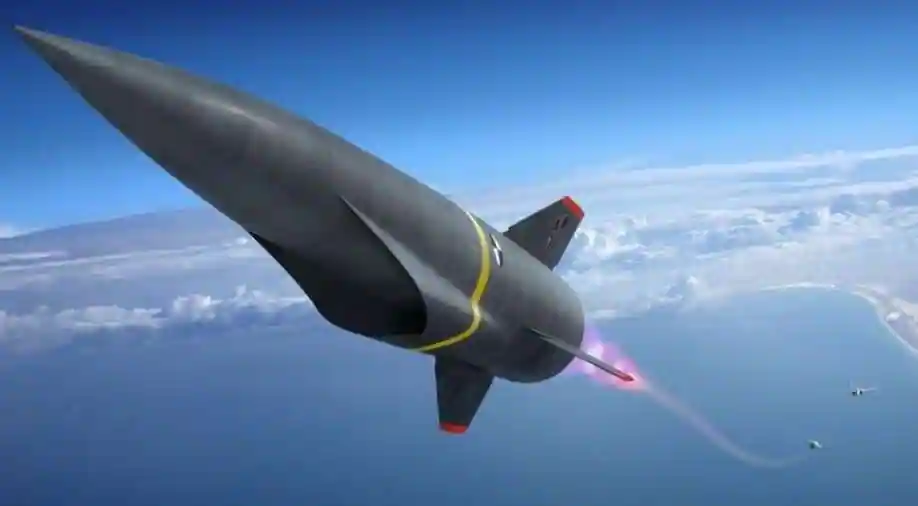

Hypersonic Missiles
A hypersonic missile travels at speeds of Mach 5 and higher – five times faster than the speed of sound (3836 mph), which is around 1 mile per second. Recently Russia has fired a hypersonic missile ‘Kinzhal’ against Ukraine which can go upto the speed of 10 Mach and distance upto 1200 miles.
All the intercontinental ballistic missiles(ICBM) in the world that carry nuclear warhead are hypersonic and can travel upto the speed of 15000 mph. ICBM are launched on large rockets. They travel out of the atmosphere and then back inside to follow the trajectory to the target.
There are three types of hypersonic missiles:
1. Aero-Ballistic Missile
2. Glide Vehicles
3. Cruise Missiles
Hypersonic aero-ballistic missile is dropped from an aircraft, accelerated to hypersonic speed using a rocket and then follows a ballastic, meaning unpowered trajectory. The hypersonic glide vehicle is boosted on a rocket to high altitude and then glides to its target, maneuvering along the way. A hypersonic cruise missile is boosted by a rocket to hypersonic speed and then uses an air breathing engine called a scramjet to sustain that speed. Because they ingest air into their engines, hypersonic cruise missiles require smaller launch rockets than hypersonic glide vehicles, which means they can cost less and be launched from more places.
Hypersonic weapons are difficult to defend because of their speed, maneuvarability and flight path.
The main difference between ballistic missile and hypersonic missile is the maneuverability of the missile. Ballistic missile once launched follows a predifined path whereas a hypersonic missile can be manoeuvred to the intended target.
Russia, Chinia, US are currently possessing hypersonic missiles whereas countries like India, Japan, France, Australia and Germany too are developing hypersonic weapons.
